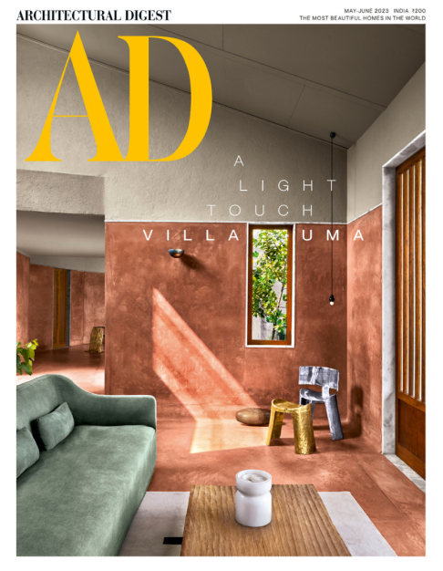

<div class="w-full flex flex-row justify-center pr-[20px]">
  <div class="mt-[40px]">
    <h1 class="w-2/4 text-black mb-[60px] cursor-default">
      We are an international practice rooted in India engaging in collaborative
      design processes to create spaces and objects of all scales that deeply
      impact human interactions and the shared environment.
    </h1>
    <p class="ml-[30px] w-3/5 text-xs cursor-default">
      2023-05-16 We are proud to share that our first house, Villa Uma, is
      featured on the May/June 2023 issue of Architectural Digest, India. It has
      been our honor and privilege to work with the entire Poddar family. We
      appreciate their faith in our vision as well as trust in our abilities.
      Thank you to the team at AD India both past and present, for all your
      efforts in helping us share our work with the world. And a big thank you
      to all of the amazing collaborators, builders, artisans, and contributors
      to this little home. Check out the complete article here.
    </p>
  </div>
  
</div>
